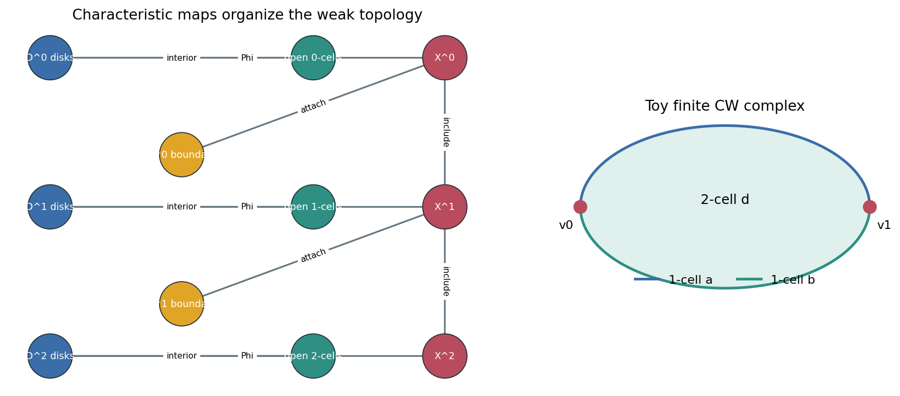

The appendix is the machinery that makes later constructions legal: cells generate topology, compactness makes infinite complexes finite for local tests, and mapping spaces behave when local compactness is present.

Cell data: disks, boundaries, skeleta, characteristic maps.
Neighborhood data: collars retract back to subcomplexes.
Map-space data: compact-open path tubes.
Working question. When can local tests certify global continuity for spaces built cell-by-cell, product-by-product, or map-by-map?